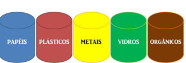

Coleta > Reciclando
Coleta seletiva
Atualizado em 16/Agosto/2015
SE-PA-RAN-DO O LIXO
O lixo deteriorável (biodegradável), composto pelos restos de carne, vegetais, frutas, etc, é separado do lixo restante, podendo ter como destino os aterros sanitários ou entrarem num sistema de valorização de resíduos.
A reciclagem tornou-se uma ação importante na vida moderna pois houve um aumento do consumismo e uma diminuição do tempo médio de vida da maior parte dos acessórios que se tornaram indispensáveis no dia a dia trouxeram um grave problema: qual o destino a dar quando perdem utilidade? No inicio os resíduos resultantes da atividade humana tinham como destino as lixeiras ou então aterros sanitários, contudo com o aumento exponencial da quantidade de resíduos e da evolução tecnológica, aliados ao interesse económico de busca de mais matérias primas de baixo custo, o vulgarmente designado lixo começa a perder o caráter pejorativo do nome e começa a ser considerado como um resíduo, passível de ser reaproveitado. Com as tecnologias actuais apenas uma ínfima parte dos resíduos urbanos não são passiveis de reaproveitamento, sendo direcionados para unidades de eliminação dos mesmos, normalmente os aterros sanitários.
Felizmente a maior parte dos mesmos podem ser destinados ao reaproveitamento, quer seja reciclagem ou outros tipos de reaproveitamento. A coleta seletiva, ou recolha seletiva tem como objectivo a separação dos resíduos urbanos pelas suas propriedades e pelo destino que lhes pode ser dado, com o intuito de tornar mais fácil e eficiente a sua recuperação. Assim pretende-se resolver os problemas de acumulação de lixo nos centros urbanos, e reintegrar os mesmos no ciclo industrial, o que traz vantagens ambientais e econômicas. Os pontos onde são depositados para a recolha são denominados de lixões, ou ecopontos. Estes podem oferecer vários tipos de coletores, de acordo com as especificidades dos resíduos da zona e das respostas de tratamento existentes pela entidade que procede ao seu encaminhamento para os centros de valorização.
SEPARADO, tudo fica novo, de novo.
Materiais não recicláveis:
Reciclagem
É o processo de transformação de um material, cuja primeira utilidade terminou, em outro produto. Além de preservar o meio ambiente, a partir do momento que minimiza a retirada de nova matéria prima, também gera riquezas aos catadores de materiais recicláveis.
